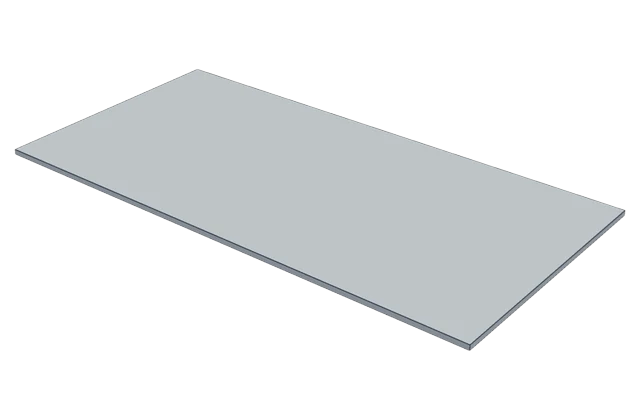
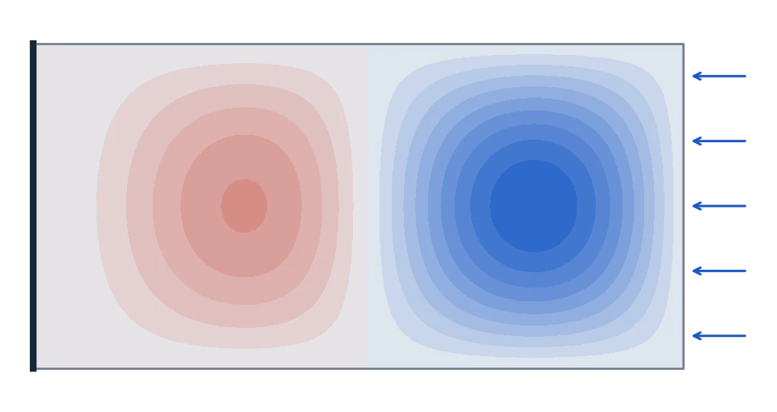
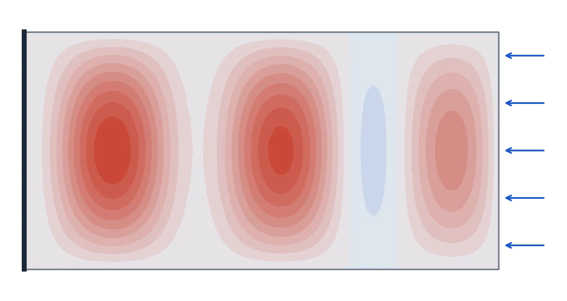

Our FEM model
0.379FEniCSx with quadratic elements and the SLEPc eigen-solver, on three meshes (14 762, 23 411 and 36 095 elements): 0.3787, 0.3788, 0.3790.
Case study · task BT-plate-08 · GPT-6 Astra
GPT-6 Astra set up this buckling problem correctly: right shape, supports, load and solver input. It still reported a number 2.3 times too high, because the solver skipped the first four answers and Astra did not check what it got.

The part: an aluminium plate, 300 × 150 × 3 mm, given to Astra as analysis.step.
1 · The task
A thin aluminium plate (E = 70 000 MPa, Poisson ratio 0.33), 300 mm long, 150 mm wide and 3 mm thick. One short end is clamped. The two long edges and the far end are held so they cannot move up or down, but they can slide in the plane.
The far end is pushed along the plate with a pressure of 282.8 MPa, about 127 kN in total.
By what factor λ₁ must that push be multiplied for the plate to buckle? (λ₁ = 0.5 means it buckles at half the push.)
Input
| prompt | geometry, material, supports, load, analysis type, output key |
analysis.step | the plate as a 3D CAD file (mm) |
faces.json | its 6 faces with area, centroid and normal |
Output
{
"outputs": {
"lambda1": <number> // first (smallest positive) buckling factor
}
}plus main.py and solver.log. Pass if |λ₁ − reference| / reference ≤ 5 %.
Linear (eigenvalue) buckling analysis of a aluminium member: plate 300 x 150 x 3 mm. analysis.step holds the analysis geometry in millimetres (one solid). faces.json describes every face (index, type, area, centroid, normal/axis). Material: linear isotropic elastic, E = 70000 MPa, Poisson ratio 0.33. Supports: (1) all displacement components = 0 on face 1: plane, area 450.00 mm^2, centroid (0.0, 75.0, 0.0) mm, outward normal (-1.0, -0.0, -0.0). (2) displacement u_z = 0 on face 3: plane, area 900.00 mm^2, centroid (150.0, 0.0, 0.0) mm, outward normal (-0.0, -1.0, -0.0); face 4: plane, area 900.00 mm^2, centroid (150.0, 150.0, 0.0) mm, outward normal (0.0, 1.0, 0.0). (3) displacement u_z = 0 on face 2: plane, area 450.00 mm^2, centroid (300.0, 75.0, 0.0) mm, outward normal (1.0, 0.0, 0.0). Reference load set (load factor 1): (1) uniform traction (-282.772, 0, 0) MPa on face 2: plane, area 450.00 mm^2, centroid (300.0, 75.0, 0.0) mm, outward normal (1.0, 0.0, 0.0). No self-weight. Analysis: compute the linear prebuckling stress state under the reference load set, then the elastic buckling load factors lambda (eigenvalues of K + lambda K_G = 0, the whole reference load set scaled by lambda). Report the smallest positive one. Outputs: - lambda1 [-]: first (smallest positive) elastic buckling load factor of the reference load set Submit results.json containing exactly an outputs object with this numeric key, plus main.py and solver.log.
2 · What Astra did
One call to GPT-6 Astra (medium reasoning, no tools, no feedback) returned one Python program. We ran it once, offline: it took 25.7 seconds. The generation cost $0.14.
analysis.step and found the clamped end, the long edges and the pushed end from faces.json. Correct.*BUCKLE step asking for 8 buckling factors. Correct.{"outputs": {"lambda1": 0.8701205}}. It never checked the number against a hand formula or a second method.3 · The correct answer
Our FEM model
0.379FEniCSx with quadratic elements and the SLEPc eigen-solver, on three meshes (14 762, 23 411 and 36 095 elements): 0.3787, 0.3788, 0.3790.
Hand formula
≈ 0.38Plate buckling stress = k · π²E / (12(1 − ν²)) · (t/b)² ≈ 25.8 · k MPa. For this plate k ≈ 4, so it buckles near 107 MPa, which is 0.38 of the 282.8 MPa push. Astra's 0.870 would need k ≈ 9.5, far above any textbook value for this plate.
Astra's own file
0.379We reran Astra's own CalculiX file unchanged except for the load, cut to 10 %. The first factor came out as 3.7903, which is 0.3790 at the full load: the same answer.
4 · Why it went wrong
The buckling step of CalculiX 2.23 can silently miss factors below about 1. Here the four lowest were missing, and Astra took the fifth as the first.
What CalculiX printed for Astra (full load)
| Mode | Factor |
|---|---|
| 1 | 0.8701 ← reported as λ₁ |
| 2 | 1.1280 |
| 3 | 1.4300 |
| 4 | 1.4416 |
| … | 4 more, all above 1.5 |
Same file at 10 % load, scaled back
| Mode | Factor |
|---|---|
| 1 | 0.3790 ← the real λ₁ |
| 2 | 0.4638 (skipped) |
| 3 | 0.5568 (skipped) |
| 4 | 0.6699 (skipped) |
| 5 | 0.8701 (Astra's answer) |
| 6 | 1.1280 |


Why it matters. Astra's answer says the plate holds 87 % of the push before buckling. In reality it buckles at 38 %. A design checked with Astra's number would fail at less than half the load it was trusted to carry.
5 · The math, without any tolerance
The ±5 % band says how close is close enough. This failure does not depend on it: 0.870 is not an inaccurate value of the first buckling factor, it is a different buckling factor. Four checks show this.
Linear buckling solves (K + λ·KG)·φ = 0, where K is the stiffness and KG the effect of the load. λ₁ is the smallest positive λ. Equivalently, λ₁ = min over all shapes φ of R(φ) = φᵀKφ / (−φᵀKGφ) (the Rayleigh quotient). So if any shape gives R below 0.870, then 0.870 cannot be λ₁. The first mode found at reduced load gives R = 0.379.
Factor the matrix K − s·(−KG) as LDLᵀ. By Sylvester's law of inertia, the number of negative entries in D equals the number of buckling factors below s. This is the Sturm check industrial solvers use. On our own model of this plate it gives exactly 4 modes below 0.870, so Astra's answer is mode 5. The result is a whole number: no tolerance is involved.
K does not depend on the load and KG is proportional to it, so multiplying the load by α divides every λ by α, exactly. CalculiX broke this law: at the full load its first factor was 0.870; at 10 % load it was 3.790, i.e. 0.379 at full load. A correct solver must give the same answer both ways. The value 0.8701205 appears in both runs, as mode 1 and as mode 5, so the four lower modes were missed, not miscomputed.
Plate theory: buckling stress = k · π²E / (12(1 − ν²)) · (t/b)² ≈ 25.8 · k MPa for this plate, with k ≈ 4 for a plate twice as long as wide. That puts λ₁ near 0.38. Astra's 0.870 needs k ≈ 9.5. No textbook support condition for this plate gets close to that.
Mode count on our model (Sturm check)
| Shift s (load factor) | Modes below s |
|---|---|
| 0.375 | 0 |
| 0.385 | 1 ← first mode between these |
| 0.47 | 2 |
| 0.56 | 3 |
| 0.68 | 4 |
| 0.86 | 4 |
| 0.875 | 5 ← Astra's 0.870 is the 5th |
FEniCSx, quadratic tetrahedra (4.8 mm, 14 762 elements), MUMPS LDLᵀ inertia. Script: scripts/buckle_traps/sturm_count.py.
Two independent models, mode by mode
| Mode | Our model (between) | Astra's own CalculiX file |
|---|---|---|
| 1 | 0.375–0.385 | 0.3790 |
| 2 | 0.46–0.47 | 0.4638 |
| 3 | 0.55–0.56 | 0.5568 |
| 4 | 0.66–0.68 | 0.6699 |
| 5 | 0.86–0.875 | 0.8701 (reported as λ₁) |
| 6 | 1.12–1.14 | 1.1280 |
Astra's file at 10 % load, factors scaled back to the full load.
So the band does not matter. Astra's value is 2.3 times the right one. It would fail any band narrower than ±130 %, and even a wider band would only accept a number that belongs to a different buckling shape.
6 · How it was scored
| Check | Result |
|---|---|
| Program ran offline | yes, 25.7 s, exit code 0 |
results.json keys | exactly lambda1, a finite number |
lambda1 | 0.870 vs 0.379: relative error +130 %, band ±5 % → wrong number |
| Files | results.json, main.py, solver.log present |
| Verdict | Fail. Failure type: silent wrong value (it trusted the solver without a sanity check) |
7 · Possible limitations
Astra wrote its program blind and never saw the solver output. With a chance to look and fix, it might have caught the error. In earlier runs with feedback it did recover on some tasks.
We ran each task once. Running Astra again could give a different program and a different answer.
Our instructions say not to use recalled published results. In seven other trap tasks Astra's logs say it used no analytical value, so it may avoid hand formulas even as a check.
The trap depends on how CalculiX 2.23 searches for buckling factors. A model that picks another solver does not meet it, so the task tests checking habits more than physics knowledge.
The task ignores yielding and imperfections. That is standard for this kind of check, but a real plate design would also need a yield and imperfection check.
The correct answer comes from our own FEM model, not from an outside source. It agrees with a hand formula and with Astra's own file at reduced load, so we trust it, but it is not independently published.
Astra's run had 10 minutes and 6 GB of memory. Its program finished in 26 seconds, so the limits did not cause this failure, but they shape what a model can try.
This page shows the answer to BT-plate-08. Leave this task out when testing a model that may have seen this page or the public data.
All evidence for this case (Astra's program, its CalculiX file, the solver tables, our reference runs and the rerun) is in the failure dataset. Full task spec: BT-plate-08.md.